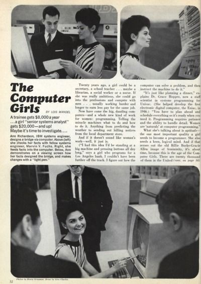
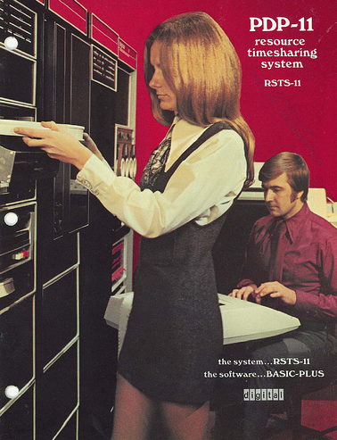
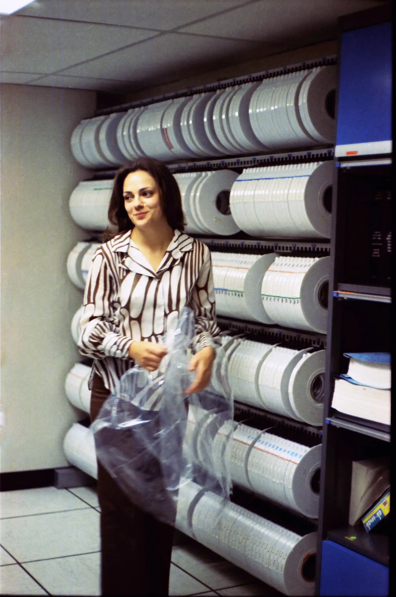
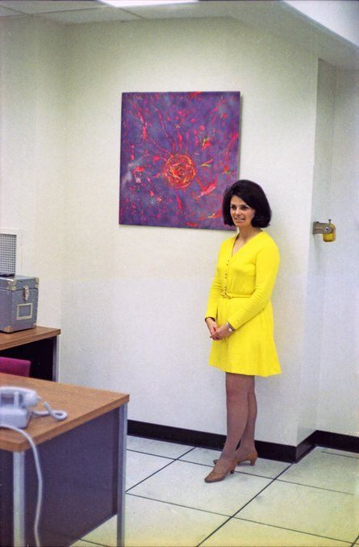
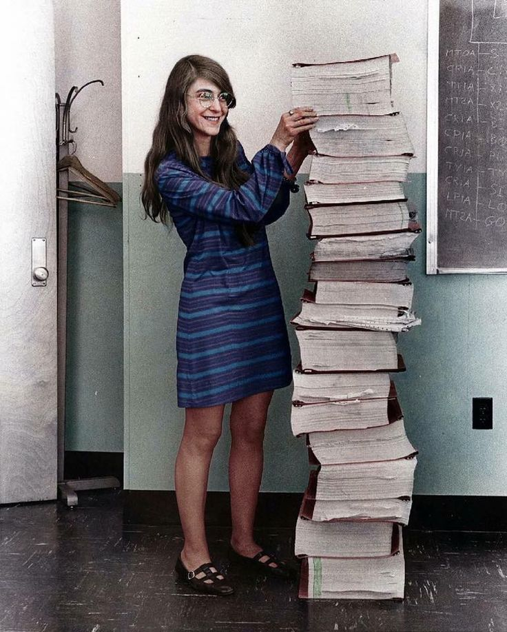
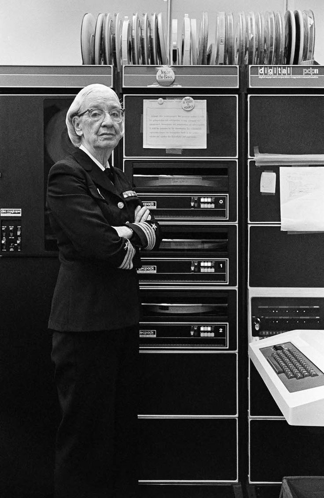
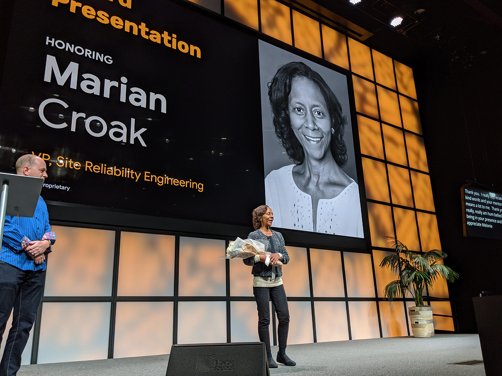

The Rise of Women in Technology


Flashbak - Women and Computers in the 1960s and 1970s
From the early days of computing, women have played vital roles in shaping the field, even if their contributions were often overlooked. Despite their significant roles, women in tech during this time were frequently reduced to stereotypical and objectified images, both in the workplace and in the media. Advertisements from the era often depicted women in revealing outfits, using their appearance to sell complex technologies, reinforcing the idea that women were more valued for their looks than for their intellect or their contributions to the field.
The women at Bell Labs, however, were far more than the images presented in advertisements. In the 1960s, Bell Labs in Oakland, California, was a leading center for technological innovation, contributing groundbreaking advancements like the invention of the transistor and the development of the laser. Through images captured by Lawrence "Larry" Luckham, we gain insight into these women’s roles at Bell Labs, challenging the gender norms of the time.


Big computers, big hair: the women of Bell Labs in the 1960s – in pictures
These photographs not only depict women working alongside men in a technical environment but also mark the beginning of a cultural shift. While initially objectified by the media, the women of Bell Labs began to be recognized as valuable contributors to the scientific and technological fields, paving the way for future generations to be respected and acknowledged in the tech industry.
The Role of Women in Technology: From Ada Lovelace to Margaret Hamilton
Women have played crucial roles in shaping technology, though often unrecognized. Ada Lovelace, the first computer programmer, wrote the first algorithm for Babbage's Analytical Engine. In the 20th century, Grace Hopper developed the first compiler, and Hedy Lamarr co-invented frequency-hopping technology, laying the foundation for modern computing and wireless communication. Despite working in male-dominated fields, their contributions were vital to the development of the tech industry.

These women made significant contributions to technology but faced objectification, overlooked achievements, and skepticism about their abilities due to their gender. Margaret Hamilton, the brilliant mind behind the Apollo mission software, is another example of a woman whose genius was initially underestimated. Despite these challenges, they persevered, paving the way for future generations of women in tech. However, the fight for recognition and equality continues, underscoring the ongoing need for gender balance in tech.


The Current Landscape
Women have historically been underrepresented in technology, but today, they are breaking barriers and excelling across all areas. From software engineering to artificial intelligence, women are shaping the future of tech. According to the World Economic Forum, women make up around 28% of the global tech workforce, with even lower representation in fields like data science and AI. McKinsey & Company highlights that gender inequality remains a major challenge, especially in STEM fields.

Marian Croak is honored at the State of Black Women Summit, an internal event for Googlers, in November 2019. Image courtesy of Google
Despite facing obstacles, women are making strides by founding companies, developing assistive technologies for people with disabilities, and leading key research initiatives. Notable figures include Betsy Beaumon, who has been instrumental in accessible technology, Caroline Craven, a leader in accessible design, and Deborah L. McGuinness.
Beyond their technical work, women are driving cultural change, advocating for gender equality, diversity, and inclusion, and inspiring the next generation of women in tech.